ทะเบียนรายการปรับปรุง UI/UX ฉบับรวม (Consolidated Checklist) — คณะทำงานที่ 3 การประชุมทบทวนระบบงาน คณะทำงานที่ 3 (20 ต.ค. 69)
ลำดับ 101–132
คลินิกเบาหวาน/ความดัน + จุดคัดกรองกลาง (Fast Track · LMP · แพ้ยา/แพ้อาหาร · ระยะเวลาที่มีอาการ) · ข้อความใน Excel · แก้อะไร · ดูยังไงทีละขั้น · ภาพจากระบบจริง (ข้อมูลผู้ป่วยตัวอย่าง) วงกรอบแดงตรงจุดที่แก้ · อัปเดต 9 พ.ย. 2569 (รอบ 4: ลำดับ 103 · 110 ตัดสินแล้ว (110ก) · ข้อ 133–136 ทีมน้องดูแล จึงไม่อยู่ในหน้านี้)
| ลำดับ | รหัส | หัวข้อ | ผล |
|---|---|---|---|
| 101 | NCD-44 | การบันทึกสัญญาณชีพ (Vital Signs) กรณี 'ไม่ได้วัด' และ 'วัดไม่ได้' | มีอยู่แล้ว |
| 102 | NCD-45 | ช่องทาง Fast Track ที่จุดคัดกรองกลาง/ตู้ Kiosk สำหรับผู้ป่วยเร่งด่วน | ทำแล้ว · ทดสอบแล้ว |
| 103 | NCD-46 | กราฟแสดงผลความดันโลหิต (BP Graph) | มีอยู่แล้ว · แก้เพิ่ม |
| 104 | OPD-07 | สถานะประจำเดือน (LMP): Default 'หมดประจำเดือน' จาก Visit ก่อนหน้า | ทำแล้ว · ทดสอบแล้ว |
| 105 | OPD-08 | แยกช่องบันทึก 'แพ้ยา' และ 'แพ้อาหาร' ออกจากกัน | มีอยู่แล้ว |
| 107 | NCD-46 | กราฟแสดงผลความดันโลหิต (BP Graph) | ทำแล้ว · ทดสอบแล้ว |
| 108 | NCD-47 | การบันทึกประวัติเจ็บป่วยเดิมและประวัติครอบครัว | มีอยู่แล้ว |
| 109 | NCD-48 | การปรับปรุงหน้าจอขึ้นทะเบียนโรคเรื้อรัง | ทำแล้ว · ทดสอบแล้ว |
| 110 | OPD-10 | ฟิลด์ระยะเวลาที่มีอาการ (Chief Complaint Duration) ในหน้าคัดกรองกลางเป็น Textbox | มีอยู่แล้ว · ตัดสินแล้ว |
| 111 | NCD-50 | การลงรหัสการวินิจฉัยโรค (ICD-10) | มีอยู่แล้ว |
| 112 | NCD-51 | เปิดสิทธิ์ให้พยาบาลช่วยลงรหัสโรค ICD-10 ได้ | มีอยู่แล้ว |
| 113 | NCD-52 | ลำดับขั้นตอนงานตรวจ: สั่งยา/หัตถการในหน้าเดียวกับตรวจและวินิจฉัย และย้ายการบันทึกนัดหมายไปหน้า 'แผนการดูแลรักษา' | ทำแล้ว |
| 114 | NCD-53 | เหตุผลในการสั่งจ่ายและปรับเปลี่ยนยา (Medication Adjustment Reason) | มีอยู่แล้ว |
| 115 | NCD-54 | หน้าหลักแสดงเฉพาะสรุปผลตรวจที่ผิดปกติ และแจ้งเตือนสีแดงกรณีตรวจตา/ตรวจเท้าผิดปกติ | มีอยู่แล้ว |
| 116 | NCD-55 | แบบฟอร์มตรวจตา: เพิ่ม Plan Repeat และย้ายข้อความเงื่อนไขส่งต่อพบจักษุแพทย์มาไว้ในหน้าตรวจตา | ทำแล้ว · ทดสอบแล้ว |
| 122 | NCD-56 | แยกคำศัพท์ 'ส่งปรึกษา' (Consultation) และ 'ส่งต่อ' (Referral) เป็น 2 ระบบ | มีอยู่แล้ว |
| 132 | NCD-57 | หน้าจอรายงานคลินิกเบาหวาน/ความดัน: ตัดตัวเลขข้อหัวข้อ (เช่น 5, 8.1.1) ออก | ทำแล้ว · ทดสอบแล้ว |
ลำดับ 101 · NCD-44
การบันทึกสัญญาณชีพ (Vital Signs) กรณี 'ไม่ได้วัด' และ 'วัดไม่ได้'
ข้อความใน Excel
การบันทึกสัญญาณชีพ (Vital Signs) กรณี 'ไม่ได้วัด' และ 'วัดไม่ได้' หน้าจอ: หน้าคัดกรอง / ส่วน Vital Signs รายละเอียด: • 'ไม่ได้วัด' → แสดงเป็น Checkbox หรือเครื่องหมาย '-' • 'วัดไม่ได้' → บังคับกรอก Textbox ระบุเหตุผลประกอบ
แก้อะไร
ฟังก์ชันมีอยู่แล้ว (ทำไว้ตั้งแต่ 22 ต.ค. 69): ติ๊ก "ไม่ได้วัด" แล้วต้องเลือกเหตุผล · แก้เพิ่ม 9 พ.ย. 69: ขยายป๊อปอัป "เหตุผลที่ไม่ได้วัด" ให้ทุกปุ่มเหตุผลอยู่บรรทัดเดียว (ใช้ร่วมทุกหน้าที่มีการ์ดสัญญาณชีพ)
ดูยังไง
- เข้าระบบเป็นพยาบาลคัดกรองกลาง
- เปิดเมนูคัดกรอง → หน้า /opd/queue แล้วกดผู้ป่วยรายใดก็ได้
- ไปขั้น "สัญญาณชีพ
- ติ๊กช่อง "ไม่ได้วัด" บนการ์ดค่าใดก็ได้ → ป๊อปอัปให้เลือกเหตุผล (อื่นๆ ต้องพิมพ์ระบุ)
ภาพหน้าจอ
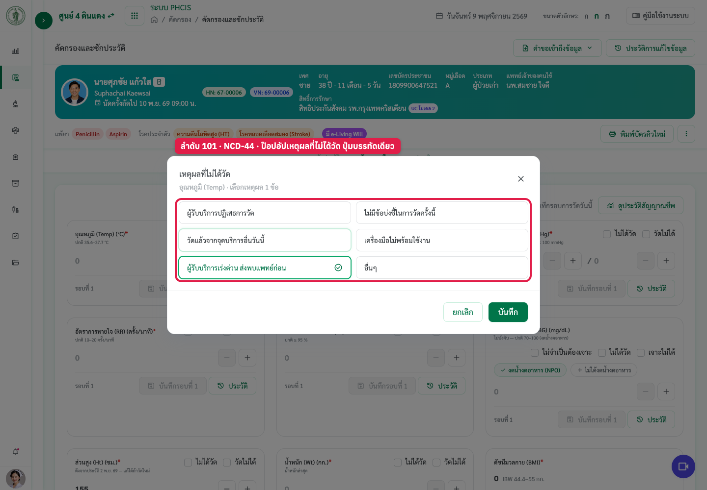
ลำดับ 102 · NCD-45
ช่องทาง Fast Track ที่จุดคัดกรองกลาง/ตู้ Kiosk สำหรับผู้ป่วยเร่งด่วน
ข้อความใน Excel
ช่องทาง Fast Track ที่จุดคัดกรองกลาง/ตู้ Kiosk สำหรับผู้ป่วยเร่งด่วน หน้าจอ: จุดคัดกรองกลาง (Nursing Triage) / ตู้ Kiosk รายละเอียด: • พยาบาลจุดคัดกรองกดเลือก Fast Track ได้ สำหรับผู้ป่วยเร่งด่วน / ผู้สูงอายุ / ผู้นั่งรถเข็น (Wheelchair) / ผู้มีอาการวิกฤต (เช่น ความดันสูงมาก หรือน้ำตาลตก) • บังคับให้พยาบาลคัดกรองระบุเหตุผลการเข้าช่องทาง Fast Track ฟิลด์ที่ต้องบันทึก: • Fast Track (ปุ่ม/Checkbox), เหตุผลการเข้า Fast Track (บังคับ)
แก้อะไร
เพิ่มส่วน "ช่องทาง Fast Track" ใต้ความเร่งด่วน ขั้นสัญญาณชีพ: ติ๊ก "เข้าช่องทาง Fast Track" แล้ว "เหตุผลการเข้า Fast Track" บังคับ (ผู้ป่วยเร่งด่วน · ผู้สูงอายุ · ผู้นั่งรถเข็น (Wheelchair) · ผู้มีอาการวิกฤต (เช่น ความดันสูงมาก หรือน้ำตาลตก) · อื่นๆ ระบุ) · ไม่เลือกเหตุผลแล้วกดส่งต่อ ระบบเตือนและพากลับมาที่ช่อง · ผู้ป่วย Fast Track มีป้าย ▶▶ สีแดงหลังชื่อทุกคิวและบนการ์ดผู้ป่วย และเรียงขึ้นต่อจากผู้ป่วยฉุกเฉิน
ดูยังไง
- เข้าระบบเป็นพยาบาลคัดกรองกลาง
- เปิดเมนูคัดกรอง (/opd/queue) แล้วกดผู้ป่วยที่รอคัดกรอง เช่น HN 67-00003
- ไปขั้น "สัญญาณชีพ" แล้วเลื่อนลงใต้ "ความเร่งด่วน
- ติ๊ก "เข้าช่องทาง Fast Track" → ช่อง "เหตุผลการเข้า Fast Track" ขึ้นมา (บังคับ)
- ลองไม่เลือกเหตุผลแล้วกด "บันทึกและส่งต่อ" ที่ขั้นสุดท้าย → ขึ้น "ยังไม่ได้ระบุเหตุผลการเข้า Fast Track" → กด "ไประบุเหตุผล
- เลือกเหตุผลแล้วส่งต่อ → เปิดคิวคัดกรอง/คิวห้องแพทย์ จะเห็นป้าย ▶▶ หลังชื่อ (ชี้ดูเหตุผล) และแถวอยู่ต่อจากผู้ป่วยฉุกเฉิน
หมายเหตุ
ปุ่ม Fast Track ที่ตู้ Kiosk ให้ทีมน้องทำใน bma.kiosk
ภาพหน้าจอ


ลำดับ 103 · NCD-46
กราฟแสดงผลความดันโลหิต (BP Graph)
ข้อความใน Excel
กราฟแสดงผลความดันโลหิต (BP Graph) หน้าจอ: หน้า EMR ผู้ป่วย NCDs รายละเอียด: • ปรับสเกลกราฟอัตโนมัติ (Auto Scale) • กดขยายเต็มหน้าจอได้ • แยกแสดงผลรายเดือน (12 เดือน) • เรียกดูข้อมูลย้อนหลังข้ามปีงบประมาณได้
รหัสข้อในชีตหายตอนวางครั้งแรก · ข้อความตรงกับลำดับ 107
แก้อะไร
ข้อความเดียวกับลำดับ 107 (NCD-46) ซึ่งทำไว้แล้ว: ปรับสเกลอัตโนมัติ · ขยายเต็มจอ · รายเดือน (12 เดือน) · ย้อนหลังเป็นปี พ.ศ. · แก้เพิ่ม 9 พ.ย. 69: ⋮ "การติดตามการดูแล" และแท็บโปรไฟล์ "เบาหวาน / ความดัน" ไม่มีปุ่มกราฟเต็มจอ → เพิ่มแล้ว
ดูยังไง
- เข้าระบบเป็นแพทย์คลินิกเบาหวาน
- เมนูคลินิกเบาหวาน (/clinic/diabetes) → แท็บ "รายชื่อผู้ป่วยทั้งหมด" → กดแถวผู้ป่วย เช่น HN 67-00001
- หน้าโปรไฟล์ → แท็บ "เบาหวาน / ความดัน" → ปุ่ม "ความดันโลหิต
- กด "ดูกราฟความดันเต็มจอ" → เลือก "รายครั้ง" / "รายเดือน (12 เดือน)" · "ปี พ.ศ." เพื่อย้อนหลัง
- อีกทาง: ชี้ค่า BP บนแถบสัญญาณชีพในหน้าบันทึก (ดูลำดับ 107)
หมายเหตุ
ย้อนหลังเป็นปี พ.ศ. (ม.ค.–ธ.ค.) 10 ปี ไม่ใช่ปีงบประมาณ เหมือนลำดับ 107
ภาพหน้าจอ
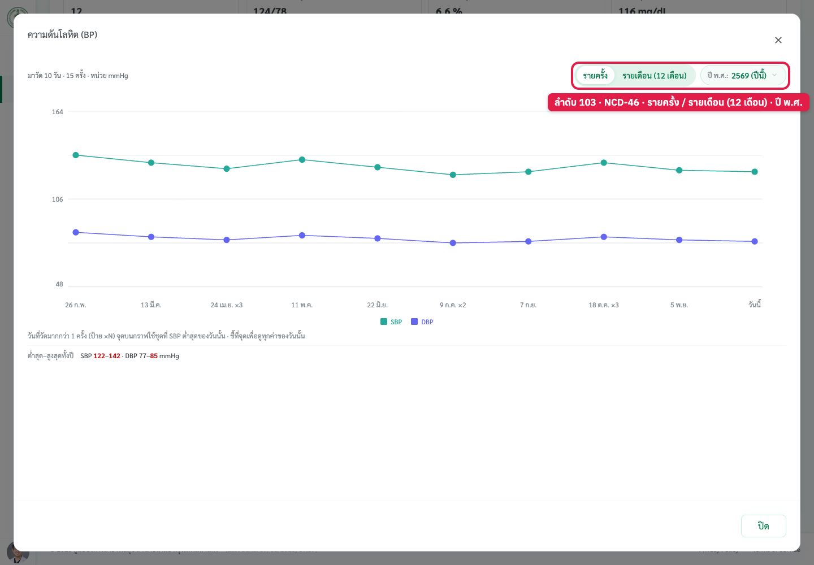
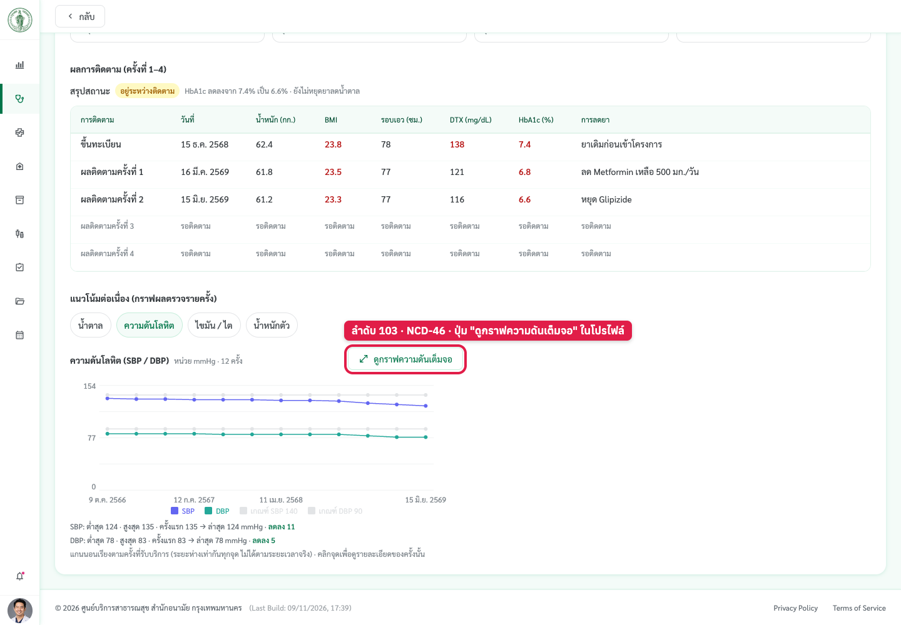
ลำดับ 104 · OPD-07
สถานะประจำเดือน (LMP): Default 'หมดประจำเดือน' จาก Visit ก่อนหน้า
ข้อความใน Excel
สถานะประจำเดือน (LMP): Default 'หมดประจำเดือน' จาก Visit ก่อนหน้า หน้าจอ: หน้าคัดกรอง รายละเอียด: • หากเคยบันทึก 'หมดประจำเดือน' ใน Visit ก่อนหน้า ให้ Default สถานะนี้ไว้อัตโนมัติใน Visit ถัดไป • ยังเปิดให้แก้ไขได้หากข้อมูลเปลี่ยนแปลง
แก้อะไร
หน้าคัดกรองกลาง ช่อง LMP: ถ้า Visit ก่อนหน้าบันทึก "หมดประจำเดือนแล้ว" ระบบเลือกสถานะนี้ไว้ให้เอง + บรรทัดเล็ก "ตั้งต้นจาก Visit ก่อนหน้า <วันที่> · แก้ได้ถ้าข้อมูลเปลี่ยน" · กดเลือกสถานะอื่นหรือเลือกวันที่ได้ตามปกติ · ประวัติ Visit ก่อนหน้ายังเป็นข้อมูลตัวอย่าง (ชุดเดียวกับป๊อปอัป "ประวัติประจำเดือน")
ดูยังไง
- เข้าระบบเป็นพยาบาลคัดกรองกลาง
- เปิดเมนูคัดกรอง (/opd/queue) แล้วกดผู้ป่วย HN 67-00003 นางปริญญา รัตนา (54 ปี)
- ขั้น "ซักประวัติ" → กดเปิดการ์ด "ซักประวัติ
- ดูช่อง "วันแรกของประจำเดือนครั้งสุดท้าย (LMP)" → ปุ่ม "หมดประจำเดือนแล้ว" ถูกเลือกไว้ + บรรทัด "ตั้งต้นจาก Visit ก่อนหน้า …
- ลองกดสถานะอื่นหรือเลือกวันที่ → เปลี่ยนได้
หมายเหตุ
ไม่ขัดมติ: กติกา "ค่าเริ่มต้นตามสถานะผู้ป่วยต้องดูจากข้อมูลจริง" ยังตรง (อ่านจาก Visit ก่อนหน้าทุกครั้งที่เปิด ไม่ได้เขียนทับในฟอร์ม)
ภาพหน้าจอ
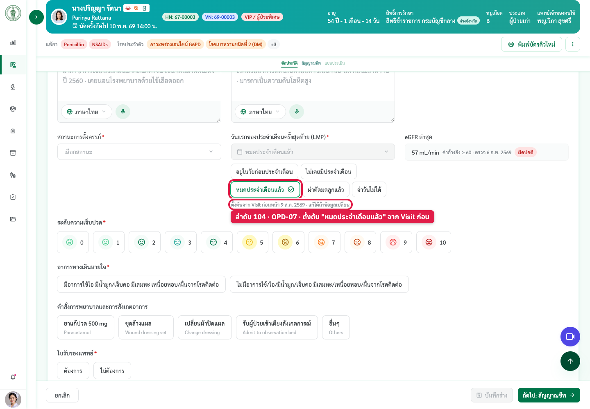
ลำดับ 105 · OPD-08
แยกช่องบันทึก 'แพ้ยา' และ 'แพ้อาหาร' ออกจากกัน
ข้อความใน Excel
แยกช่องบันทึก 'แพ้ยา' และ 'แพ้อาหาร' ออกจากกัน หน้าจอ: หน้าคัดกรอง / ซักประวัติ รายละเอียด: • แพ้ยา → ระบบแจ้งเตือนส่งต่อเภสัชกรประเมินทันที • แพ้อาหาร → ไม่ต้องส่งเภสัชกร
แก้อะไร
ฟังก์ชันมีอยู่แล้ว (ผู้ใช้ 22 ต.ค. 69): ซักประวัติมี 2 ช่องแยกกัน "มีการแพ้ยา" (ส่งเภสัชกรประเมิน) และ "มีการแพ้อาหาร" (ไม่ส่งเภสัชกร) · ป้ายบนการ์ดผู้ป่วยแยก "แพ้ยา" กับ "แพ้อาหาร" · ครั้งนี้ไม่ได้แก้โค้ด
ดูยังไง
- เข้าระบบเป็นพยาบาลคัดกรองกลาง
- เปิดเมนูคัดกรอง (/opd/queue) แล้วกดผู้ป่วยรายใดก็ได้
- ขั้น "ซักประวัติ" การ์ด "ประวัติการแพ้ / โรคประจำตัว / ยาทานประจำ
- ติ๊ก "มีการแพ้ยา" → ระบุยา + ส่งเภสัชกรประเมิน · ติ๊ก "มีการแพ้อาหาร" → ระบุอาหาร ไม่มีการส่งเภสัชกร
ภาพหน้าจอ
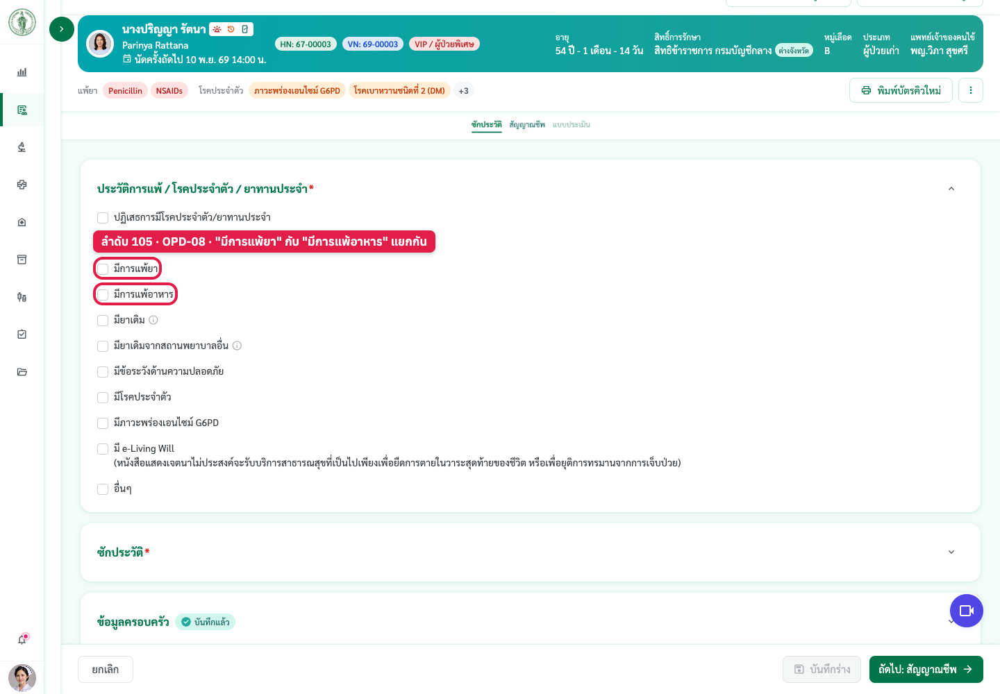
ลำดับ 107 · NCD-46
กราฟแสดงผลความดันโลหิต (BP Graph)
ข้อความใน Excel
กราฟแสดงผลความดันโลหิต (BP Graph) หน้าจอ: หน้า EMR ผู้ป่วย NCDs รายละเอียด: • ปรับสเกลกราฟอัตโนมัติ (Auto Scale) • กดขยายเต็มหน้าจอได้ • แยกแสดงผลรายเดือน (12 เดือน) • เรียกดูข้อมูลย้อนหลังข้ามปีงบประมาณได้
แก้อะไร
เพิ่มมุมมอง "รายเดือน (12 เดือน)" · ปุ่มขยายกราฟเต็มจอ · ปุ่ม "ดูกราฟความดันเต็มจอ" ในหน้าการติดตามการดูแล · ปรับสเกลอัตโนมัติมีอยู่เดิม
ดูยังไง
- เข้าระบบเป็นแพทย์คลินิกเบาหวาน
- เปิดหน้าบันทึกผู้ป่วย HN 67-00001 (/clinic/diabetes/record)
- เอาเมาส์ชี้ค่า "ความดันโลหิต (BP)" บนแถบสัญญาณชีพ → กล่องกราฟทั้งปีขึ้น
- กด "รายเดือน (12 เดือน)" เพื่อดูรายเดือน · เลือก "ปี พ.ศ." เพื่อย้อนหลัง
- กดไอคอนขยาย ⤢ ข้างปุ่ม "วัดซ้ำ" → กราฟเต็มจอ
- อีกทาง: ในหน้าบันทึกเดียวกัน กด ⋮ → "การติดตามการดูแล" → ปุ่ม "ความดันโลหิต" → "ดูกราฟความดันเต็มจอ
หมายเหตุ
ย้อนหลังเป็นปี พ.ศ. (ม.ค.–ธ.ค.) 10 ปี ไม่ใช่ปีงบประมาณ ตามที่ผู้ใช้กำหนด 22/25 ต.ค. 69 (ใหม่กว่ามติ 20 ต.ค. ซึ่งเขียนว่า "ข้ามปี")
ภาพหน้าจอ


ลำดับ 108 · NCD-47
การบันทึกประวัติเจ็บป่วยเดิมและประวัติครอบครัว
ข้อความใน Excel
การบันทึกประวัติเจ็บป่วยเดิมและประวัติครอบครัว : เห็นควรให้เพิ่มช่องบันทึกประวัติผู้ป่วยในอดีต (Patient History) และประวัติครอบครัว (Family History) ให้สามารถระบุรายละเอียดพร้อมเชื่อมโยงไปยังผังเครือญาติ (Family Tree) โดยให้ระบบดึงข้อมูลประวัติเดิมมาแสดงโดยอัตโนมัติทุกครั้ง
ข้อความในชีตถูกตัดตอนส่งมา — ข้อความนี้มาจากรายงานประชุม คทง.3 ครั้งที่ 5/2569 (20 ต.ค. 69) หน้า 3 ข้อ 2.2
แก้อะไร
ไม่ได้แก้ (ทำไว้ตั้งแต่ 22 ต.ค. 69): ช่อง Past History · Family History + ปุ่มดูข้อมูลครอบครัว
ดูยังไง
- เข้าระบบเป็นแพทย์คลินิกเบาหวาน
- เปิดหน้าบันทึกผู้ป่วย HN 67-00001
- กด "ถัดไป: ตรวจและวินิจฉัย
- แท็บ "บันทึกการตรวจรักษา" → ช่อง "ประวัติการเจ็บป่วยในอดีต (Past History)" และ "ประวัติครอบครัว (Family History)" · ปุ่ม "ดูข้อมูลครอบครัว
หมายเหตุ
ข้อความในชีตถูกตัดตอนส่งมา ใช้ข้อความรายงานประชุม หน้า 3 ข้อ 2.2
ภาพหน้าจอ

ลำดับ 109 · NCD-48
การปรับปรุงหน้าจอขึ้นทะเบียนโรคเรื้อรัง
ข้อความใน Excel
การปรับปรุงหน้าจอขึ้นทะเบียนโรคเรื้อรัง : เห็นควรให้เปลี่ยนชื่อหน้าจอเป็น "ขึ้นทะเบียนผู้ป่วยโรคเบาหวาน/ความดันโลหิตสูง" พร้อมปรับแก้ไขช่องข้อมูล "ปีที่วินิจฉัย" เป็น "พ.ศ. ที่วินิจฉัย" โดยจัดวางไว้ภายใต้หัวข้อประเภทผู้ป่วย รูปแบบการกรอกข้อมูลเป็นรายการตัวเลือก (Dropdown) เพื่อให้สามารถคำนวณตัวเลข พ.ศ. ได้ และให้ระบบแสดงสรุปจำนวนปีที่เจ็บป่วยด้วยโรคดังกล่าวโดยอัตโนมัติ
ข้อความในชีตถูกตัดตอนส่งมา — ข้อความนี้มาจากรายงานประชุม คทง.3 ครั้งที่ 5/2569 หน้า 3 ข้อ 2.2
แก้อะไร
ชื่อป๊อปอัปเป็น "ขึ้นทะเบียนผู้ป่วยโรคเบาหวาน/ความดันโลหิตสูง" · ช่อง "พ.ศ. ที่วินิจฉัย" (dropdown) ต่อจากประเภทผู้ป่วย · แสดง "ป่วยมาแล้ว N ปี" อัตโนมัติ
ดูยังไง
- เข้าระบบเป็นแพทย์คลินิกเบาหวาน
- เปิดหน้าบันทึกผู้ป่วย HN 67-00001
- กดปุ่ม "ขึ้นทะเบียนผู้ป่วยใหม่" บนการ์ดผู้ป่วย
- ดูหัวป๊อปอัป และช่อง "พ.ศ. ที่วินิจฉัย" ใต้ประเภทผู้ป่วย → เลือกปีแล้วมีข้อความ "ป่วยมาแล้ว N ปี
หมายเหตุ
ข้อความในชีตถูกตัดตอนส่งมา ใช้ข้อความรายงานประชุม หน้า 3 ข้อ 2.2
ภาพหน้าจอ

ลำดับ 110 · OPD-10
ฟิลด์ระยะเวลาที่มีอาการ (Chief Complaint Duration) ในหน้าคัดกรองกลางเป็น Textbox
ข้อความใน Excel
ฟิลด์ระยะเวลาที่มีอาการ (Chief Complaint Duration) ในหน้าคัดกรองกลางเป็น Textbox หน้าจอ: หน้าคัดกรองกลาง รายละเอียด: • รองรับกรณีผู้ป่วยมารับยาต่อเนื่อง
ตรวจเทียบ TOR: TOR ไม่กำหนดรูปแบบช่อง ต้องสรุปรูปแบบเดียวทั้งระบบ (ขัดกับ SCR-11 ของ คทง.6)
แก้อะไร
ฟังก์ชันมีอยู่แล้ว (ผู้ใช้ 22 ต.ค. 69): "ระยะเวลาที่มีอาการ" ที่คัดกรองกลางเป็นช่องพิมพ์ข้อความ 1 ช่อง (มีคำแนะนำ เช่น 3 วัน · เป็นๆ หายๆ) รองรับผู้ป่วยรับยาต่อเนื่อง · ครั้งนี้ไม่ได้แก้โค้ด
ดูยังไง
- เข้าระบบเป็นพยาบาลคัดกรองกลาง
- เปิดเมนูคัดกรอง (/opd/queue) แล้วกดผู้ป่วยรายใดก็ได้
- ขั้น "ซักประวัติ" → กดเปิดการ์ด "ซักประวัติ
- ช่อง "ระยะเวลาที่มีอาการ" = กล่องข้อความ พิมพ์อะไรก็ได้
หมายเหตุ
ขัดกับ SCR-11 (คทง.6 · 18 ก.ย. 69 ตัวเลข + หน่วย) และฝั่งแพทย์ EMR-02 (WG1 22 ต.ค. 69 · ตัวเลข + หน่วย นาที–ปี) · ตอนนี้ระบบใช้ 2 แบบ: พยาบาล = ข้อความ · แพทย์ = ตัวเลข+หน่วย (ระบบแปลงข้อความพยาบาลเป็นตัวเลขให้แพทย์เมื่ออ่านได้) — ผู้ใช้เลือก 110ก (9 พ.ย. 69): คงไว้ 2 แบบนี้
ภาพหน้าจอ
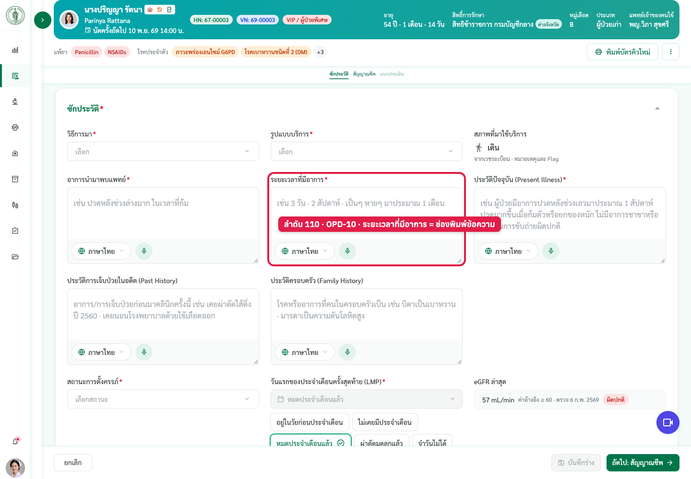
ลำดับ 111 · NCD-50
การลงรหัสการวินิจฉัยโรค (ICD-10)
ข้อความใน Excel
การลงรหัสการวินิจฉัยโรค (ICD-10) : ปรับเพิ่มฟังก์ชันให้รองรับการค้นหารหัสโรคด้วยชื่อโรค อนุญาตให้พยาบาลสามารถช่วยบันทึกรหัสโรคเบื้องต้นได้ และกำหนดเงื่อนไขตรวจสอบ เพื่อป้องกันการเลือกรหัส ICD-10 ซ้ำซ้อนการเข้ารับบริการ (Visit) เดียวกัน
ข้อความในชีตถูกตัดตอนส่งมา — ข้อความนี้มาจากรายงานประชุม คทง.3 ครั้งที่ 5/2569 หน้า 3 ข้อ 2.3
แก้อะไร
ไม่ได้แก้: ค้นรหัส ICD-10 ด้วยชื่อโรคได้
ดูยังไง
- เข้าระบบเป็นแพทย์คลินิกเบาหวาน
- เปิดหน้าบันทึกผู้ป่วย HN 67-00001
- กด "ถัดไป: ตรวจและวินิจฉัย
- การ์ดวินิจฉัย → พิมพ์ชื่อโรค (เช่น เบาหวาน) ในช่องค้นรหัส ICD-10
หมายเหตุ
ข้อความในชีตถูกตัดตอนส่งมา ใช้ข้อความรายงานประชุม หน้า 3 ข้อ 2.3
ภาพหน้าจอ

ลำดับ 112 · NCD-51
เปิดสิทธิ์ให้พยาบาลช่วยลงรหัสโรค ICD-10 ได้
ข้อความใน Excel
เปิดสิทธิ์ให้พยาบาลช่วยลงรหัสโรค ICD-10 ได้ หน้าจอ: หน้าตรวจและวินิจฉัย (ส่วนลงรหัส ICD-10)
แก้อะไร
ไม่ได้แก้: พยาบาลหลังตรวจแก้/ลงรหัส ICD-10 ได้
ดูยังไง
- เข้าระบบเป็นพยาบาลหลังตรวจ คลินิกเบาหวาน
- เปิดเมนูตรวจสอบหลังพบแพทย์ (/exit) แล้วกดผู้ป่วย
- ขั้นวินิจฉัย → กดไอคอนดินสอที่การ์ดวินิจฉัยเพื่อแก้รหัส ICD-10
ภาพหน้าจอ

ลำดับ 113 · NCD-52
ลำดับขั้นตอนงานตรวจ: สั่งยา/หัตถการในหน้าเดียวกับตรวจและวินิจฉัย และย้ายการบันทึกนัดหมายไปหน้า 'แผนการดูแลรักษา'
ข้อความใน Excel
ลำดับขั้นตอนงานตรวจ: สั่งยา/หัตถการในหน้าเดียวกับตรวจและวินิจฉัย และย้ายการบันทึกนัดหมายไปหน้า 'แผนการดูแลรักษา' หน้าจอ: หน้าตรวจและวินิจฉัย / หน้าแผนการดูแลรักษา (Care Plan & Education) รายละเอียด: • สั่งยาและหัตถการอยู่ในหน้าเดียวกับการตรวจและวินิจฉัย • สั่งยาก่อนการกำหนดวันนัดหมาย • ย้ายส่วนบันทึกวันนัดหมายจากหน้าตรวจวินิจฉัย ไปไว้ในหน้า 'แผนการดูแลรักษา' (Care Plan & Education)
แก้อะไร
การบันทึกนัดหมายอยู่ในขั้น "แผนการดูแลและสุขศึกษา" (Care Plan & Education) ไม่อยู่ในหน้าตรวจและวินิจฉัย · ส่วนรวมสั่งยา/หัตถการเข้าหน้าตรวจและวินิจฉัย ไม่ทำ (ผู้ใช้ 9 พ.ย. 69) — คงขั้น "สั่งการรักษา (CPOE)" แยก
ดูยังไง
- เข้าระบบเป็นแพทย์คลินิกเบาหวาน
- เปิดหน้าบันทึกผู้ป่วย HN 67-00001 (/clinic/diabetes/record)
- กดแถบขั้นด้านบน "แผนการดูแลและสุขศึกษา" (Care Plan & Education)
- เลื่อนลงถึงการ์ด "การนัดหมาย": นัดพบแพทย์ · ประเภทกิจกรรมที่นัด · วันที่นัด · เวลา · คำแนะนำก่อนมาตามนัด · บันทึกถึงพยาบาล
หมายเหตุ
มติ คทง.3 ครั้งที่ 5/2569 หน้า 3 ข้อ 2.3 · ผู้ใช้ให้ทำเฉพาะส่วนย้ายนัดหมาย
ภาพหน้าจอ
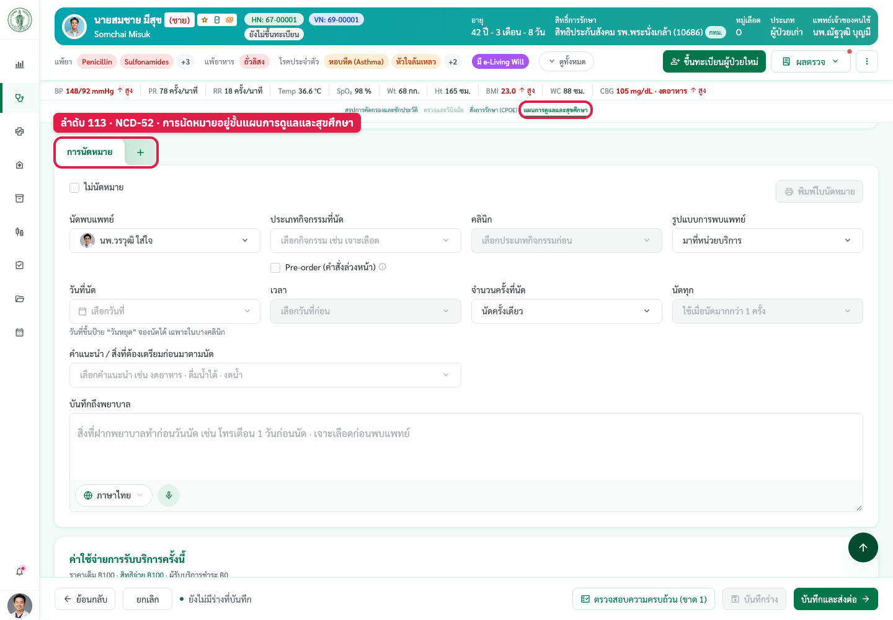
ลำดับ 114 · NCD-53
เหตุผลในการสั่งจ่ายและปรับเปลี่ยนยา (Medication Adjustment Reason)
ข้อความใน Excel
เหตุผลในการสั่งจ่ายและปรับเปลี่ยนยา (Medication Adjustment Reason) หน้าจอ: หน้าสั่งยา (CPOE) รายละเอียด: • เพิ่ม Textbox 'เหตุผลในการสั่งจ่ายและปรับเปลี่ยนยา (ถ้ามี)' ใต้รายการสั่งจ่ายยา • ไม่บังคับกรอก (ไม่มีดอกจัน *) • ดึงเหตุผลการปรับยาล่าสุดมาแสดง และกดดูประวัติการสั่งจ่าย/ปรับเปลี่ยนยาย้อนหลังได้
แก้อะไร
ไม่ได้แก้: มีช่องเหตุผลรายแถวยา (ไม่บังคับ) + ประวัติการปรับยา ตามที่ตกลงไว้ 22 ต.ค. 69 ไม่ใช่กล่องเดียวใต้รายการ
ดูยังไง
- เข้าระบบเป็นแพทย์คลินิกเบาหวาน
- เปิดหน้าบันทึกผู้ป่วย HN 67-00001
- ไปขั้น "สั่งการรักษา (CPOE)
- ในแถวยา → ช่องเหตุผลการสั่ง/ปรับยา · ปุ่มประวัติการปรับยา
ภาพหน้าจอ

ลำดับ 115 · NCD-54
หน้าหลักแสดงเฉพาะสรุปผลตรวจที่ผิดปกติ และแจ้งเตือนสีแดงกรณีตรวจตา/ตรวจเท้าผิดปกติ
ข้อความใน Excel
หน้าหลักแสดงเฉพาะสรุปผลตรวจที่ผิดปกติ และแจ้งเตือนสีแดงกรณีตรวจตา/ตรวจเท้าผิดปกติ หน้าจอ: หน้า EMR ผู้ป่วย NCDs (หน้าหลัก) รายละเอียด: • ไม่ดึง Summary ทั้งหมดมาแสดงที่หน้าหลัก ดึงเฉพาะส่วนที่ผลตรวจผิดปกติ • Alert ตัวอักษรสีแดงเฉพาะกรณีผลตรวจตาหรือตรวจเท้าผิดปกติ (เช่น Monofilament ผิดปกติ)
แก้อะไร
ไม่ได้แก้ (ทำไว้ตั้งแต่ 22 ต.ค. 69): ผลผิดปกติขึ้นแถบแดงใต้ชื่อแถว
ดูยังไง
- เข้าระบบเป็นแพทย์คลินิกเบาหวาน
- เปิดหน้าบันทึกผู้ป่วย HN 67-00017 (เท้าผิดปกติ) หรือ 67-00012 (ตาผิดปกติ)
- กด "ถัดไป: ตรวจและวินิจฉัย" → แท็บ "ตรวจตามเกณฑ์การดูแล
- แถวตรวจเท้า/ตรวจตา มีแถบแดง "ตรวจเท้าผิดปกติ" / "ตรวจตาผิดปกติ" + รายการที่ผิดปกติ
ภาพหน้าจอ

ลำดับ 116 · NCD-55
แบบฟอร์มตรวจตา: เพิ่ม Plan Repeat และย้ายข้อความเงื่อนไขส่งต่อพบจักษุแพทย์มาไว้ในหน้าตรวจตา
ข้อความใน Excel
แบบฟอร์มตรวจตา: เพิ่ม Plan Repeat และย้ายข้อความเงื่อนไขส่งต่อพบจักษุแพทย์มาไว้ในหน้าตรวจตา หน้าจอ: หน้าคัดกรองภาวะแทรกซ้อน NCDs (ส่วนบันทึกการตรวจตา) ฟิลด์ที่ต้องบันทึก: • Plan Repeat: 1 ปี / 9 เดือน / 6 เดือน / 3 เดือน • ข้อความเงื่อนไขการส่งต่อพบจักษุแพทย์ (จัดวางในหน้าตรวจตา)
แก้อะไร
การ์ด "แผนการตรวจซ้ำและการส่งต่อ" ในป๊อปอัปตรวจตา: นัดตรวจตาซ้ำ 1 ปี · 9 เดือน · 6 เดือน · 3 เดือน + ข้อความเงื่อนไขส่งต่อพบจักษุแพทย์ + บรรทัดแดงเมื่อผลเข้าเกณฑ์
ดูยังไง
- เข้าระบบเป็นแพทย์คลินิกเบาหวาน
- เปิดหน้าบันทึกผู้ป่วย HN 67-00012
- กด "ถัดไป: ตรวจและวินิจฉัย" → แท็บ "ตรวจตามเกณฑ์การดูแล
- แถวตรวจตา กด "บันทึกผล" → เลื่อนถึงการ์ดท้ายป๊อปอัป
หมายเหตุ
ข้อความเงื่อนไขรอแบบฟอร์ม Fundus Screening ของคณะทำงานยืนยัน
ภาพหน้าจอ

ลำดับ 122 · NCD-56
แยกคำศัพท์ 'ส่งปรึกษา' (Consultation) และ 'ส่งต่อ' (Referral) เป็น 2 ระบบ
ข้อความใน Excel
แยกคำศัพท์ 'ส่งปรึกษา' (Consultation) และ 'ส่งต่อ' (Referral) เป็น 2 ระบบ หน้าจอ: โมดูลส่งปรึกษา / ส่งต่อผู้ป่วย รายละเอียด: • ยกเลิกการใช้คำว่า 'ส่งต่อ' รวมกัน • ส่งปรึกษา: ส่งภายในสังกัดสำนักอนามัย ทั้งภายในศูนย์บริการเดียวกัน (ต่างคลินิก เช่น สังคมสงเคราะห์, กายภาพ, ทันตกรรม, เภสัช) และไปยังศูนย์บริการสาธารณสุขอื่น • ส่งต่อ: ส่งผู้ป่วยไปหน่วยงานภายนอก (โรงพยาบาลภายนอก) ฟิลด์ที่ต้องบันทึก: • ส่งปรึกษา: วัตถุประสงค์การส่งปรึกษา • ส่งต่อ: วัตถุประสงค์/หมายเหตุ (เพื่อการตรวจ / เพื่อการรักษาต่อ)
แก้อะไร
ไม่ได้แก้: ป๊อปอัปส่งต่อแยกปุ่ม "ส่งปรึกษา" (ภายในศูนย์ / ศูนย์อื่นในสำนักอนามัย) กับ "ส่งต่อภายนอกสำนักอนามัย"
ดูยังไง
- เข้าระบบเป็นแพทย์คลินิกเบาหวาน
- เปิดหน้าบันทึกผู้ป่วย HN 67-00001
- ไปขั้นสุดท้าย → กด "บันทึกและส่งต่อ
- แถวบนของป๊อปอัปมีปุ่ม "ส่งปรึกษา" และ "ส่งต่อภายนอกสำนักอนามัย
ภาพหน้าจอ

ลำดับ 132 · NCD-57
หน้าจอรายงานคลินิกเบาหวาน/ความดัน: ตัดตัวเลขข้อหัวข้อ (เช่น 5, 8.1.1) ออก
ข้อความใน Excel
หน้าจอรายงานคลินิกเบาหวาน/ความดัน: ตัดตัวเลขข้อหัวข้อ (เช่น 5, 8.1.1) ออก หน้าจอ: หน้ารายงานคลินิก NCDs
แก้อะไร
บนจอไม่มีเลขข้อหน้าชื่อแถว · ไฟล์ส่งออกยังมีเลขข้อตามแบบรายงานกองฯ (ตรวจไฟล์ CSV แล้ว)
ดูยังไง
- เข้าระบบเป็นแพทย์คลินิกเบาหวาน
- เปิดหน้ารายงานคลินิก (/clinic/diabetes/reports)
- ดูตารางตัวชี้วัด → ชื่อแถวไม่มีเลขข้อ
- กด "นำส่งออกรายงาน" → ตัวอย่างไฟล์ยังมีเลขข้อ
ภาพหน้าจอ

แก้เพิ่มเติม (นอกรายการ TOR)
งานที่ขอเพิ่มหลังทำรายการ 101–136
สภาพที่มาใช้บริการ (จากเวชระเบียน) แสดงในหน้าคัดกรอง
แก้เพิ่ม 9 พ.ย. 69
คำขอ
สภาพที่มาใช้บริการบันทึกในหน้าเวชระเบียน แสดงตรงไหนในหน้าคัดกรอง (ผู้ใช้ 9 พ.ย. 69 · เลือก ข)
แก้อะไร
เดิมแสดงเฉพาะไอคอนหลังชื่อในหน้าคิว · เพิ่ม: (1) ไอคอนเดียวกันหลังชื่อบนการ์ดผู้ป่วยทุกหน้าบันทึก (คัดกรอง · ห้องแพทย์ · คลินิก · พยาบาลหลังตรวจ) ชี้แล้วบอกว่ามาจากเวชระเบียน (2) หน้าคัดกรองกลาง การ์ด "ซักประวัติ" แสดงอ่านอย่างเดียวในแถวเดียวกับ "วิธีการมา" · "รูปแบบบริการ": ไอคอน + สภาพ (รวม "เดิน") + "จากเวชระเบียน · หมายเหตุและ Flag"
ดูยังไง
- เข้าระบบเป็นพยาบาลคัดกรองกลาง
- เปิดเมนูคัดกรอง (/opd/queue) แล้วกดผู้ป่วย HN 67-00006 นายศุภชัย แก้วใส (ทะเบียนบันทึกว่านั่งรถเข็น)
- ดูหลังชื่อบนการ์ดผู้ป่วยสีเขียว → ไอคอน ♿ (ชี้ดูที่มา)
- กดเปิดการ์ด "ซักประวัติ" → ช่องที่ 3 แถวบน "สภาพที่มาใช้บริการ: นั่งรถเข็น"
- เทียบกับ HN 67-00003 → แสดง "เดิน" และไม่มีไอคอนบนการ์ด
หมายเหตุ
ไม่ใช่ข้อใน TOR checklist ลำดับ 101–136 — แก้ตามคำขอเพิ่มเติม
ภาพหน้าจอ
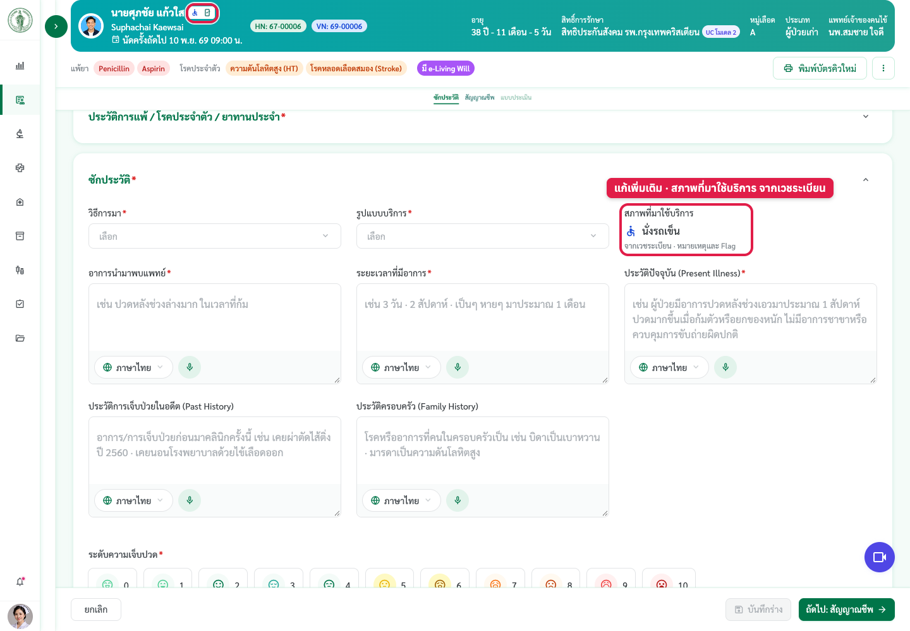
หน้าโปรไฟล์ผู้รับบริการ แยกแท็บตามสิทธิ์และคลินิก
แก้เพิ่ม 9 พ.ย. 69
คำขอ
ประวัติเวชระเบียน ประวัติคัดกรอง EMR วันนัดหมาย และอื่นๆ ช่วย mock ให้ · มุมมองแพทย์ พยาบาล เจ้าหน้าที่ แต่ละคลินิกเห็นไม่เหมือนกัน · component แสดงแท็บของทุกคลินิก แต่อยู่คลินิกไหนเห็นแค่ของคลินิกที่ตัวเองดูแล (ผู้ใช้ 9 พ.ย. 69)
แก้อะไร
แท็บ ภาพรวม · ประวัติเวชระเบียน · ประวัติคัดกรอง · ประวัติการรักษา (EMR) · นัดหมาย แสดงตามสิทธิ์: แพทย์/ทันตแพทย์/เภสัชกร ทุกแท็บทุกคลินิก · พยาบาลไม่มี EMR (พยาบาลประจำคลินิกเห็นเฉพาะคลินิกตน) · สหวิชาชีพ คลินิกตนไม่มีการวินิจฉัย · เวชระเบียน/จุดคัดแยก ไม่มีข้อมูลโรค · การเงิน เฉพาะการมารับบริการ · คลินิกข้อมูลลับซ่อนตามสิทธิ์ · แท็บเฉพาะคลินิก "เบาหวาน / ความดัน" และ "งานบำบัดยาเสพติด" เห็นเฉพาะบทบาทของคลินิกนั้น · นัดที่ยังไม่มีในระบบ mock จากประวัติของ HN · ลบหน้า /clinic/diabetes/followup (ลิงก์เก่าพาไปหน้าคิว)
ดูยังไง
- เข้าระบบเป็นแพทย์คลินิกเบาหวาน
- เปิดคิว /clinic/diabetes → แท็บ "รายชื่อผู้ป่วยทั้งหมด"
- กดแถวผู้ป่วย เช่น HN 67-00007 → หน้าโปรไฟล์ผู้รับบริการ
- สลับแท็บด้านบน: ภาพรวม · ประวัติเวชระเบียน · ประวัติคัดกรอง · EMR · นัดหมาย · เบาหวาน / ความดัน
- เปลี่ยนบทบาทเป็นพยาบาลคัดกรองเบาหวาน / เวชระเบียน / ทีมงานบำบัด แล้วเปิดคนเดิมเพื่อเทียบแท็บที่เห็น
หมายเหตุ
ไม่ใช่ข้อใน TOR checklist ลำดับ 101–136 — แก้ตามคำขอเพิ่มเติม
ภาพหน้าจอ
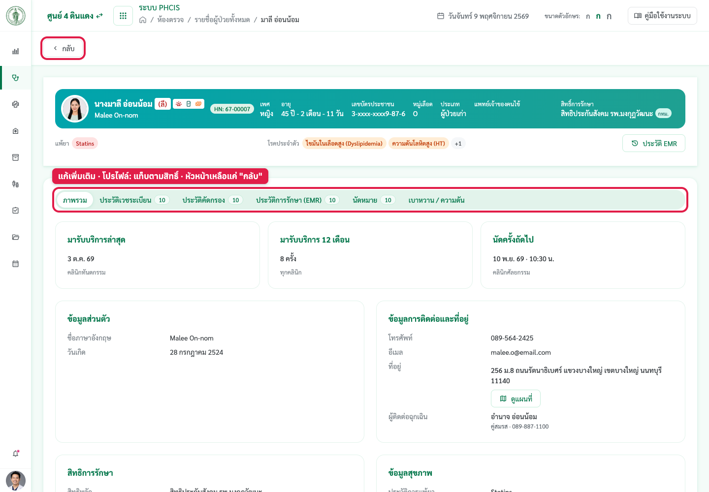
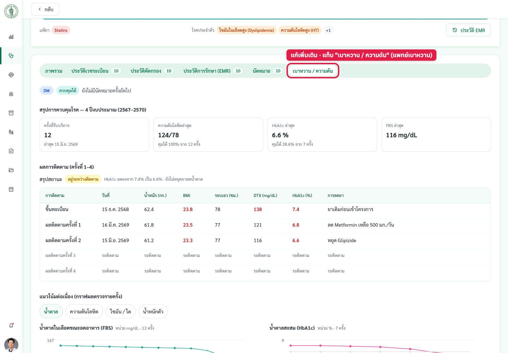
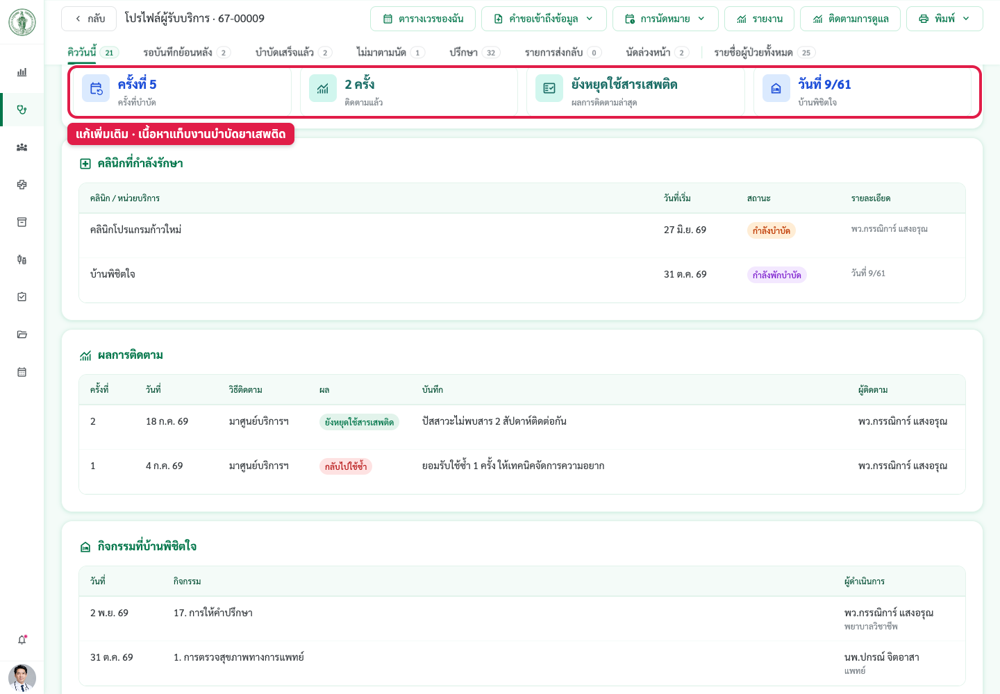
ไม่คิดค่าบริการทางการแพทย์ (0 บาท) · พยาบาลหลังตรวจต้องยืนยัน
แก้เพิ่ม 9 พ.ย. 69
คำขอ
1. พยาบาลหลังห้องตรวจ (Exit Nurse) ตรวจสอบความถูกต้องของรายการค่าใช้จ่ายทั้งหมดก่อนส่งไปชำระเงิน และแก้ไขได้ · 2. แพทย์ระบุเหตุผลที่ไม่คิดค่าบริการจาก Dropdown เช่น คลินิกส่งเสริมสุขภาพ หรือการขอใบส่งตัวโดยไม่ได้ตรวจ · เมื่อแพทย์เลือกไม่คิดค่าบริการ ระบบแสดง Popup แจ้งเตือนให้พยาบาลหลังห้องตรวจตรวจสอบและกดยืนยันรับทราบ · ค่าบริการ 0 บาท พยาบาลต้องตรวจสอบและกดยืนยันทุกครั้ง หากไม่ยืนยัน ระบบไม่ให้ไปหน้าถัดไป (รูปจากผู้ใช้ 9 พ.ย. 69)
แก้อะไร
แพทย์: บรรทัด "ค่าบริการทางการแพทย์" ใต้ตารางสั่งการรักษา มีช่อง "คิดค่าบริการ | ไม่คิดค่าบริการ (0 บาท)" + เหตุผลบังคับ (คลินิกส่งเสริมสุขภาพ · ขอใบส่งตัวโดยไม่ได้ตรวจ · ขอเอกสาร/ใบรับรองโดยไม่ได้ตรวจ · มารับยาแทนโดยไม่ได้พบแพทย์ · อื่นๆ ระบุ — ร่าง รอทีมการเงินยืนยัน) · ราคารวม/สรุปค่าใช้จ่ายเป็น 0 ทันที · พยาบาลหลังตรวจ (ทุกคลินิก + /exit/record): เปิดหน้าแล้วขึ้นป๊อปอัปเตือน (เหตุผล · ใครเลือก · แก้ได้) → "ยืนยันรับทราบ" · การ์ด "ค่าใช้จ่ายการรับบริการครั้งนี้" ขั้นสุดท้ายมีแถบสถานะ + แก้การคิดค่าบริการได้ · ยังไม่ยืนยัน กด "บันทึกและส่งต่อ" = เด้งป๊อปอัปอีก ไปต่อไม่ได้ · ยอดรวมทั้ง Visit 0 บาทก็ต้องยืนยันเหมือนกัน · บิลการเงินแสดงบรรทัดค่าบริการ ฿0 + เหตุผล + ผู้เลือก
ดูยังไง
- เข้าระบบเป็นแพทย์ (เช่น อายุรแพทย์) → เปิดคิว /treat/queue → กดผู้ป่วย
- ไปขั้น "สั่งการรักษา (CPOE)" → เลื่อนลงถึง "ค่าบริการ" → เลือก "ไม่คิดค่าบริการ (0 บาท)" + เหตุผล → บันทึกและส่งต่อ
- เปลี่ยนบทบาทเป็นพยาบาลหลังตรวจ → /exit → กดผู้ป่วยรายเดิม
- เปิดหน้าแล้วขึ้นป๊อปอัป "ไม่คิดค่าบริการทางการแพทย์ (0 บาท) — ตรวจสอบก่อนส่งชำระเงิน" (กด "ตรวจสอบภายหลัง" ได้)
- ไปขั้นสุดท้าย → การ์ดค่าใช้จ่ายมีแถบ "รอพยาบาลยืนยันรับทราบ" · ลองกด "บันทึกและส่งต่อ" → ป๊อปอัปเด้งอีก
- กด "ยืนยันรับทราบ" → แถบเป็นสีเขียว → กด "บันทึกและส่งต่อ" ได้
หมายเหตุ
แทนกติกาเดิม "ค่าบริการทางการแพทย์ 100 บาท คิดเสมอ ไม่มีตัวเลือก" (22 ต.ค. 69) · ไม่ใช่ข้อในลำดับ 101–136 — แก้ตามรูปที่ผู้ใช้ส่งมา
ภาพหน้าจอ
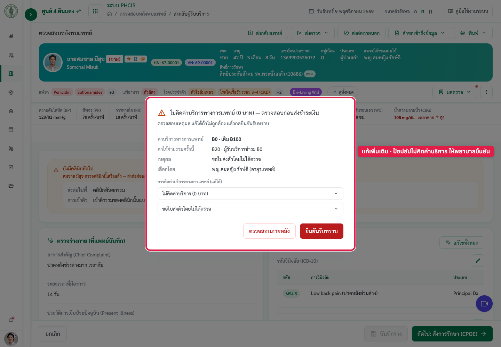
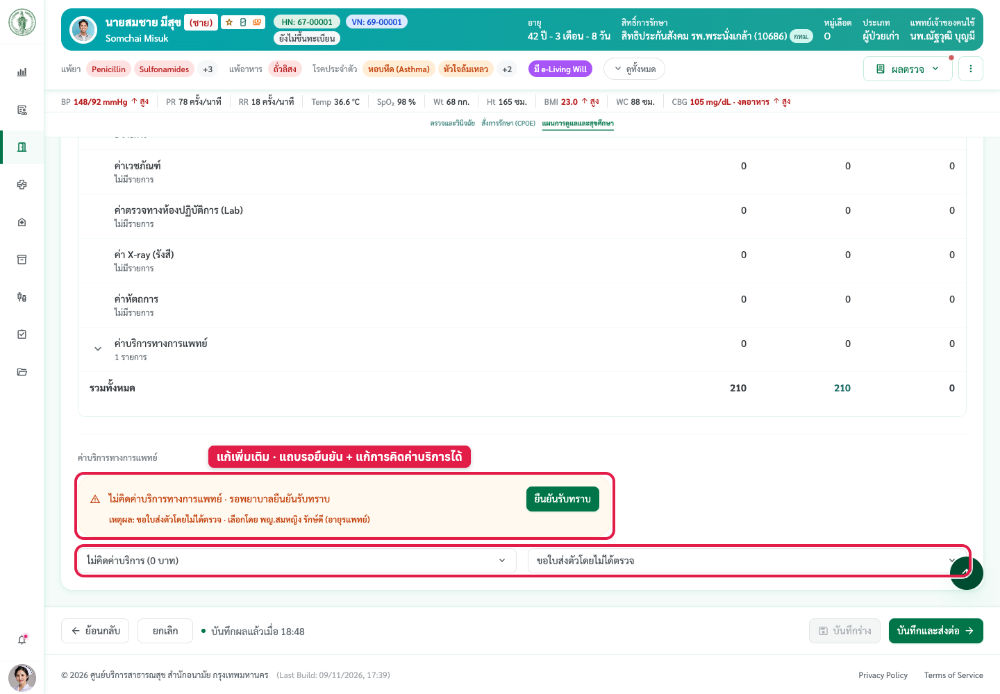